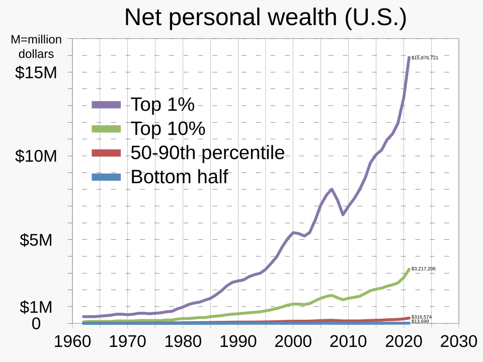

Track how the gap between the ultra-wealthy and median workers is widening in real-time.
If the official economy is doing so well, why is the cost of basic survival spiking for everyday people?

How geopolitical choke points in the oceans are directly driving up the cost of everything you buy.

Does a 1% dip in TSMC really predict conflict? We analysed 5 years of S&P 500 correlation data.
Join the elite list receiving daily telemetry deep-dives. We focus on structural shifts in fuel, fiat, and supply chains that the mainstream media misses.
*Automated daily updates via gsnterminal@gmail.comIf you find this tool valuable, consider supporting its development.